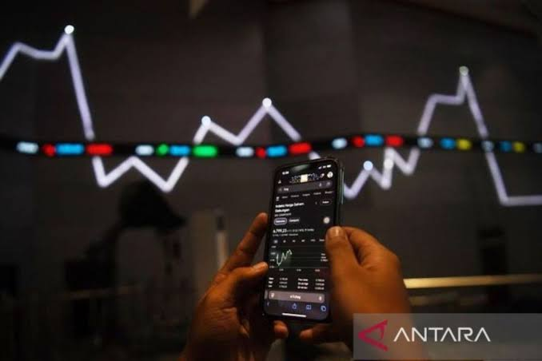

apa itu ishg

Indeks Harga Saham Gabungan (IHSG), atau dikenal secara internasional sebagai Jakarta Composite Index (JCI), adalah indeks utama yang mengukur kinerja harga seluruh saham perusahaan tercatat di Papan Utama dan Papan Pengembangan Bursa Efek Indonesia (BEI). Pergerakan IHSG menjadi acuan utama untuk melihat kondisi pasar modal Indonesia secara real-time
Fungsi Utama IHSG Indikator Tren Pasar: Menunjukkan arah pergerakan pasar saham secara umum, apakah sedang menguat (bullish) atau melemah (bearish). Tolok Ukur Kinerja (Benchmark): Menjadi acuan bagi investor dan manajer investasi untuk menilai performa portofolio saham maupun reksa dana. Barometer Ekonomi Nasional: Mencerminkan tingkat optimisme investor domestik dan asing terhadap stabilitas ekonomi serta iklim investasi di Indonesia.
Metode Perhitungan BEI menghitung IHSG menggunakan metode rata-rata tertimbang berdasarkan kapitalisasi pasar yang disesuaikan dengan jumlah saham beredar di publik (free float market capitalization). Melalui metode ini, pergerakan harga saham perusahaan berkapitalisasi besar (big caps) memiliki bobot pengaruh paling dominan terhadap naik-turunnya IHSG dibandingkan saham berkapitalisasi kecil. Faktor Penggerak IHSG Makroekonomi Domestik: Perubahan suku bunga acuan Bank Indonesia (BI-Rate), tingkat inflasi, pertumbuhan Produk Domestik Bruto (PDB), serta nilai tukar Rupiah terhadap Dolar AS. Sentimen Global: Kebijakan moneter bank sentral Amerika Serikat (The Fed), fluktuasi harga komoditas energi dan tambang dunia, serta dinamika geopolitik. Kinerja Fundamental Emiten: Rilis laporan keuangan kuartalan dan tahunan, pembagian dividen, serta aksi korporasi seperti merger atau akuisisi. Arus Modal Asing: Aktivitas beli bersih (foreign net buy) yang mendorong penguatan indeks, atau jual bersih (foreign net sell) yang memicu koreksi pasar.